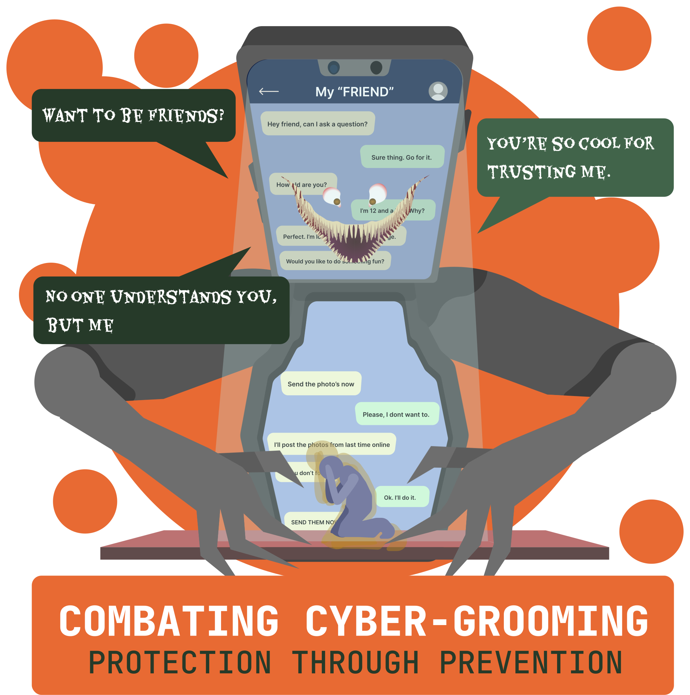

References
Child sexual exploitation and grooming. (2022, October 20). Victoria State Government.
https://www.education.vic.gov.au/school/teachers/health/childprotection/Pages/expolitationgrooming.aspx#:~:text=Grooming%20is%20when%20a%20person,or%20their%20parent%20or%20carer.
ChildSafeNet. (2019, June 15). Cyber Grooming.
https://www.childsafenet.org/new-page-15
New law puts pressure on private stakeholders to protect children vs online sexual abuse. (2022, August 3). CNN.
http://www.cnnphilippines.com/news/2022/8/3/Online-sexual-abuse-children-protection-law-Hontiveros.html
Nspcc. (n.d.). What Parents Need to Know About Sexual Grooming. NSPCC.
https://www.nspcc.org.uk/what-is-child-abuse/types-of-abuse/grooming/
Online grooming: what it is and how to protect your child | Internet Matters. (2022, October 25). Internet Matters.
https://www.internetmatters.org/issues/online-grooming/protect-your-child/
Sundy Locus. (2022, August 23). Marcos admin declares “war” against child exploitation | News |. GMA News Online.
https://www.gmanetwork.com/news/topstories/nation/842489/marcos-admin-declares-war-against-child-exploitation/story/
The Cyber Security Authority (CSA). (2015, January 4). Cyber Grooming.
https://www.csa.gov.gh/cyber_grooming.php#:~:text=Cyber%20grooming%20is%20when%20someone,abuse%2C%20sexual%20exploitation%20or%20trafficking.